Alibaba · Qwen
Qwen-VLA
One model across tasks, environments, and robot embodiments.
Hello! I’m Jinhui
I am a PhD student at The Hong Kong University of Science and Technology, supervised by Prof. Jiaya Jia. My research focuses on embodied intelligence, vision-language-action models, and generalist robot learning.
Previously, I completed an MPhil at HKUST(GZ), advised by Prof. Hui Xiong and Prof. Junwei Liang, after studying software engineering at South China University of Technology.
I initiated and maintain StarVLA, an open-source framework for building, training, and evaluating VLA models. I have also worked with Alibaba’s Qwen team, Shanghai AI Lab, CMU LTI, Stanford Vision & Learning Lab, and Tencent AI Lab.
Research in action
Alibaba · Qwen
One model across tasks, environments, and robot embodiments.
Shanghai AI Lab
A generalist model for spatially grounded robot manipulation.
Latest updates
StarVLA-α at ECCV 2026.
Paper ↓Qwen-VLA technical report released.
Read ↗ST4VLA at ICLR 2026; the StarVLA infrastructure report is now on arXiv.
Papers ↓StarVLA named an EAI-100 Top 10 Open-Source Project for 2025.
List ↗FACE and Logic-in-Frames at NeurIPS 2025.
Papers ↓MolErr2Fix · Oral presentation at EMNLP 2025.
Paper ↗LongVideoHaystack / T* at CVPR 2025.
Project ↗SePer · Spotlight at ICLR 2025.
Paper ↗Research output
GitHub stars · Semantic Scholar citations
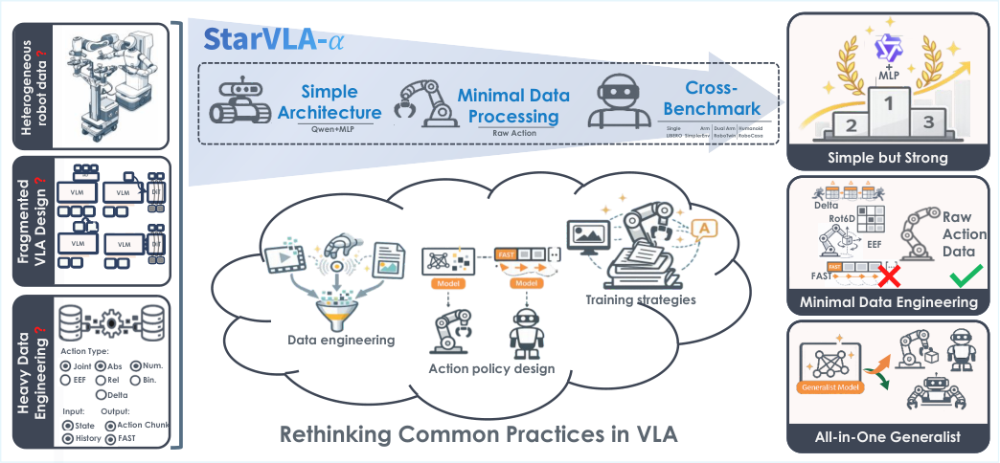
A simple VLA baseline for studying action modeling, robot pretraining, and interface design under controlled conditions.
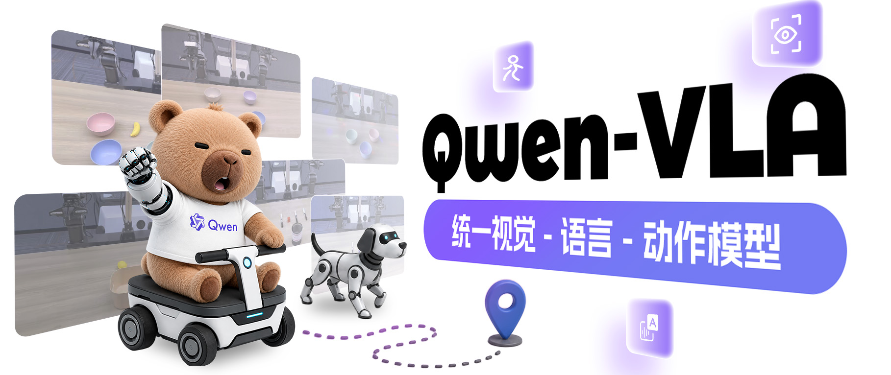
A generalist policy across robot embodiments and tasks. My work focused on training and evaluation infrastructure.
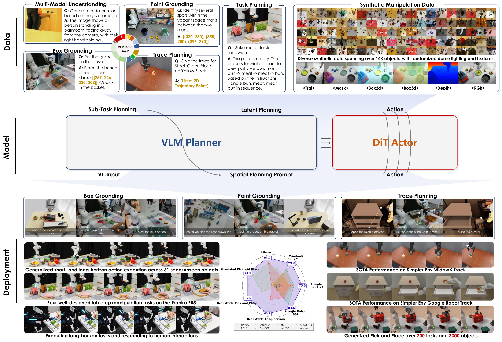
Spatially guided training connects VLM grounding with action learning. The ICLR version of InternVLA-M1.
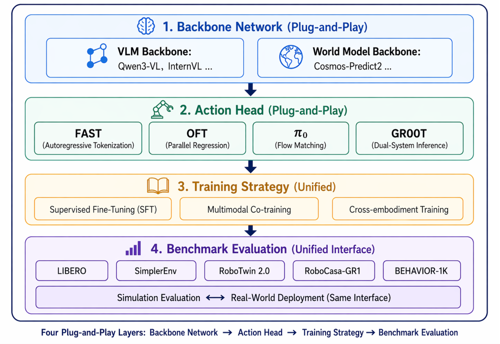
Composable infrastructure for VLA research. Project founder, core architect, and lead maintainer.
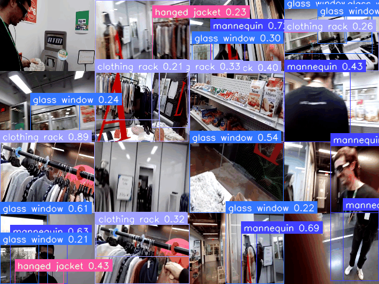
Find the few relevant frames among tens of thousands before performing detailed video reasoning.
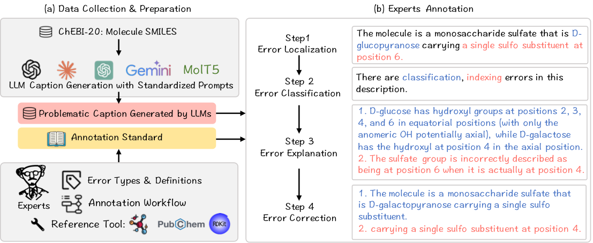
A benchmark for detecting, locating, explaining, and revising chemistry errors in language-model outputs.
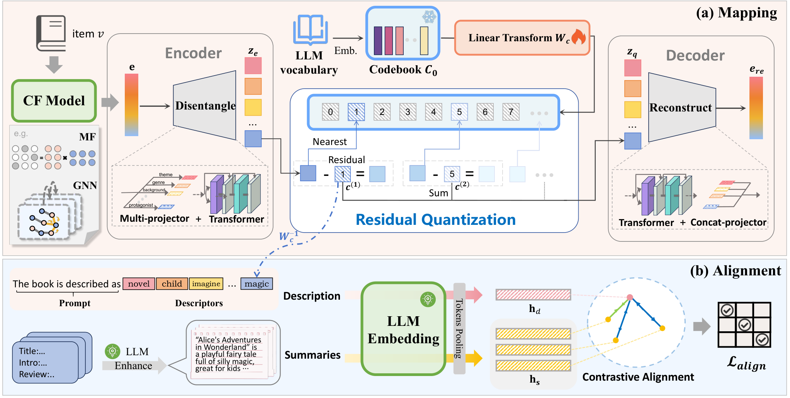
Mapping collaborative filtering representations into language-model tokens for interpretable recommendation.
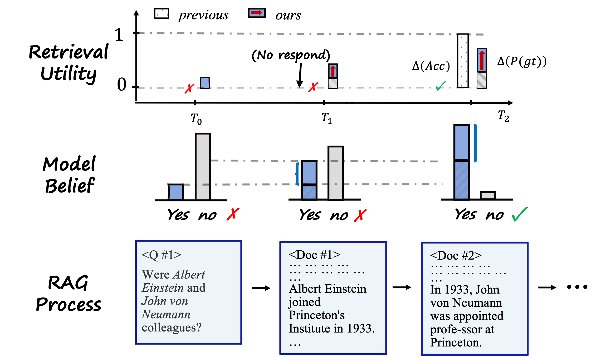
Measure retrieval utility by how much the evidence reduces uncertainty in a language model's answer.
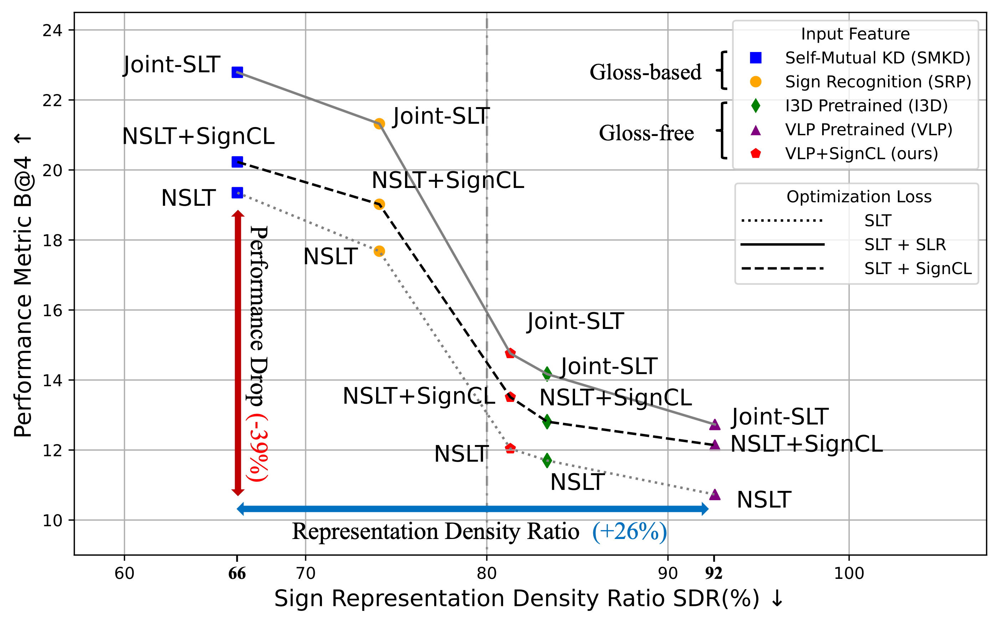
Contrastive learning for more discriminative visual representations in gloss-free sign language translation.
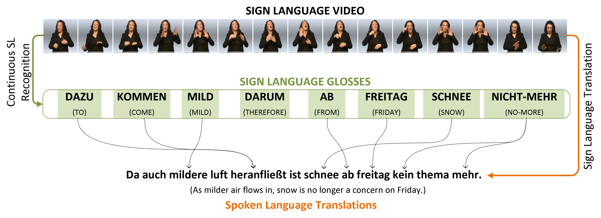
Transfer gloss-to-text knowledge to video-to-text translation through cross-modality data augmentation.
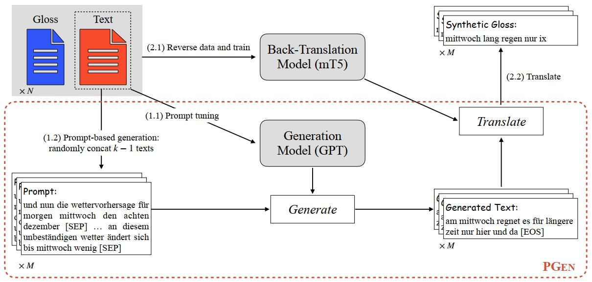
Generate in-domain spoken-language text to scale back-translation when parallel sign-language data is scarce.
Research journey
From understanding human communication to building agents that perceive, remember, and act.
Research Intern
Sign language translationVision & Learning Lab
Research Intern
Long-form video searchLanguage Technologies Institute
Visiting Student
Embodied memory & retrieval
Research Intern
InternVLA-M1 / ST4VLAResearch Intern
VLA training & evaluationAcademic background
MPhil in Artificial Intelligence
Advisors: Prof. Hui Xiong and Prof. Junwei Liang
Bachelor’s in Software Engineering · Minor in Finance
Recognition
EAI-100 Top 10 Open-Source Projects · StarVLA
Project recognition · Official list ↗
1st & 2nd Place · Pazhou Algorithm Contest
Two projects in the Human–Machine Interaction Track
Outstanding Undergraduate Thesis · South China University of Technology
National Scholarship · China
Contact
I welcome conversations around embodied AI, VLA systems, long-form video, and open-source research infrastructure.